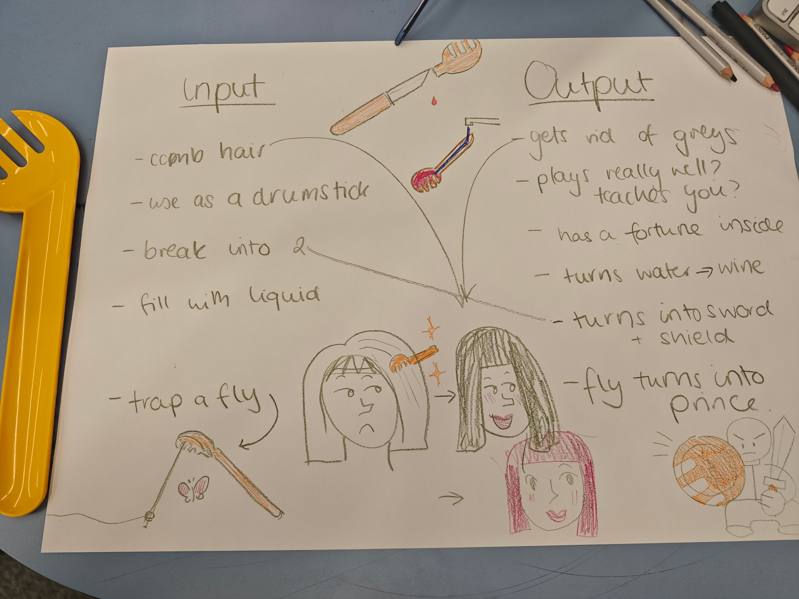

IDEA
The first class challenged our divergent thinking. Our group was assigned a salad spoon. At the time, I thought it was a pasta spoon. We imagined it as a comb, a weapon, and an insect trap.
The first class challenged our divergent thinking. Our group was assigned a salad spoon. At the time, I thought it was a pasta spoon. We imagined it as a comb, a weapon, and an insect trap.

SILK
This is my favorite "useless" website. It allows users to set mirror layers and colors, like creating auroras in the stars. It established the visual style of my website.
This is my favorite "useless" website. It allows users to set mirror layers and colors, like creating auroras in the stars. It established the visual style of my website.